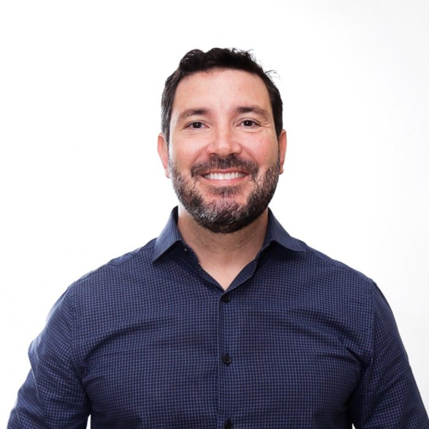
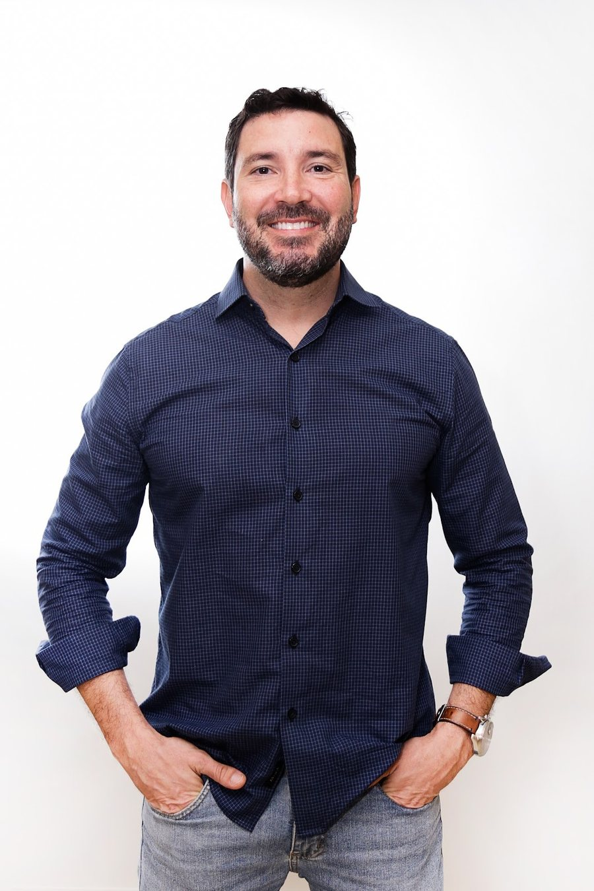

Início · Sobre
Luciano Dantas Prado Rocha, cirurgião-dentista.
Registro CRO-BA 9322. Atuação em prótese e reabilitação oral, alinhadores e ortodontia, implantes e lentes de contato dental. Cada informação desta página traz a fonte.
Linha do tempo
Trajetória
- 2002Início na odontologia
“Sou Cirurgião-Dentista atuando desde 2002” — na descrição que ele escreveu na ficha do Google.
Fonte: ficha do Google (autodeclarado) - 2009Clínica em Cajazeiras
Sócio da LDVN Clínica Odontológica, de nome fantasia “Clínica Odontológica Cajazeiras”, aberta em 2009.
Fonte: Receita Federal (CNPJ hoje baixado) - 2018Consultório com CNPJ próprio
Abre, em janeiro de 2018, o Consultório Odontológico Dr. Luciano Dantas, como titular.
Fonte: Receita Federal - 2019–2024Hospital Naval de Salvador
Cirurgião-dentista protesista do Hospital Naval de Salvador, de julho de 2019 a maio de 2024.
Fonte: histórico de vínculos do CNES - 2026Congresso IN26
Participa do IN26, congresso de implantodontia e reabilitação oral, em setembro de 2026.
Fonte: Instagram dele
Formação: Escola Bahiana de Medicina e Saúde Pública, segundo o perfil dele na Doctoralia.
2019–2024
Hospital Naval de Salvador

De julho de 2019 a maio de 2024, o Dr. Luciano atuou como cirurgião-dentista protesista no Hospital Naval de Salvador, com 28 horas semanais de atendimento ambulatorial, segundo o Cadastro Nacional de Estabelecimentos de Saúde.
Ver o histórico no CNESHoje
Atuação
- Prótese dentária: fixa, removível e sobre implante, e reabilitação oral. Ver a página.
- Alinhadores transparentes e aparelho fixo. Ver a página.
- Implantes, lentes de contato dental, facetas, restaurações estéticas, clareamento, exodontias e urgências.
- Atendimento em Patamares, no Wall Street Empresarial. Endereço e mapa.
“Sou Cirurgião-Dentista atuando desde 2002 […]”Descrição do Dr. Luciano na ficha do Google · ver a ficha
Congressos
Atualização
Em setembro de 2026, o Dr. Luciano participou do IN26, congresso de implantodontia e reabilitação oral.
“Dias intensos de muito aprendizado, atualização, troca de experiências e contato com grandes profissionais da Implantodontia e da Reabilitação Oral. […] Volto para Salvador com novas ideias… […] estar sempre atualizado faz parte do meu compromisso.”Legenda do Dr. Luciano no Instagram, 26/09/2026, sobre o congresso IN26 · ver a publicação

Transparência
Como conferir
- Número de registro: perfil na Doctoralia (“CRO BA 9322”) e inscrição no painel do CRO-BA.
- Consultório: cadastro do CNPJ 29.481.787/0001-32, ativo desde 19/01/2018.
- Hospital Naval de Salvador: histórico de vínculos do CNES.
- Avaliações: ficha do Google.
Dúvidas frequentes
Perguntas comuns
Qual é o registro do Dr. Luciano?
CRO-BA 9322, como cirurgião-dentista.
Ele trabalhou em hospital?
Sim. Foi cirurgião-dentista protesista do Hospital Naval de Salvador de julho de 2019 a maio de 2024, segundo o CNES.
Desde quando ele atende?
Ele informa que atua desde 2002. A clínica em Cajazeiras de que foi sócio foi aberta em 2009, e o consultório com CNPJ próprio, em 2018.
Agende
Comece pela avaliação.
Atendimento com hora marcada em Patamares, no Wall Street Empresarial. Fale direto com o Dr. Luciano pelo WhatsApp (71) 99306-1111 e confirme dia e horário.